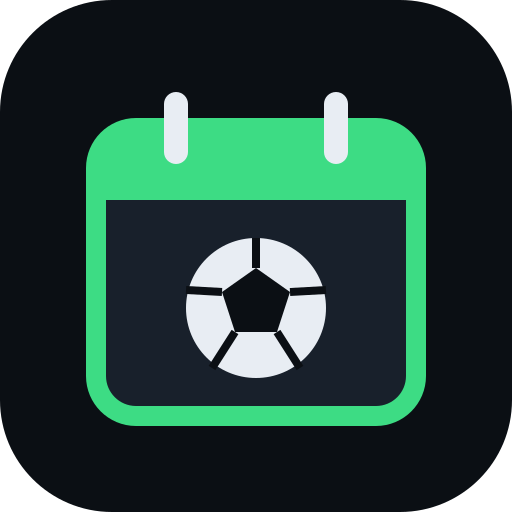

Partidos con uruguayos en el plantel que jugaron en la selección Mayor o Sub-20. Sin Liga Uruguaya.
Selección: partidos de ESPN desde 2010. Club: temporada actual (todas las competiciones). Tocá un jugador para ver su ficha.
Tip: también podés tocar cualquier partido en la agenda y seguir a sus equipos.
Elegí qué competiciones ver en la agenda.
Calendario y resultados: API pública de ESPN. "TV" muestra las transmisiones oficiales que reporta ESPN (pueden variar por país).